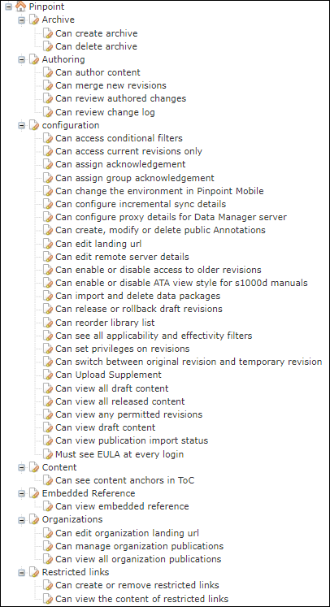
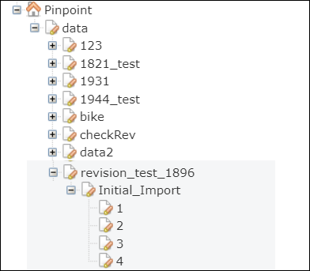

When the Pinpoint Repository is the back-end for Pinpoint Viewer, users need permissions in Access Control Manager to be able to see the publications that are available on the server. The Access Control Manager administrator grants permissions to the different user roles and organizations that can access functions in the Pinpoint Viewer. The administrator grants permissions to user groups, which allows members of a group access to the data. This data access includes libraries, their publications, and revisions.
Typically the three permission checkboxes (Read/Write/Delete) for each user role/organization should be either all activated to grant the function privilege or all deactivated to deny the function privilege. However, Table 1 gives some examples where it is possible to only give some permissions for a function privilege to certain user roles/organizations (such as Can create, modify or delete public Annotations). For more details on how to grant permissions to user roles/organizations/user groups, refer to Manage Function Privileges and Data Access Permissions.

Pinpoint Privilege Tree (configuration)

Pinpoint Privilege Tree (data)
Here are the main levels in the Pinpoint privilege tree:
| Resource | Description |
|---|---|
| Archive (user roles / organizations) | Can create archive: Grant Read permission to allow users to create an archive. |
| Can delete archive: Grant Read permission to allows users to delete an archive. | |
| Authoring (user roles / organizations | Can author content: Grant Read permission to allow users access to the authoring mode. |
| Can merge new revisions:Grant Read permission to allow users to create a merge report and do side by side merges. | |
| Can review authored changes: Grant Read permission to allow users to accept/reject authored changes. | |
| Can review change log: Grant Read permissions to allow users access to the log of authored changes. | |
| configuration (user roles / organizations) | Can access: Grant Read permission
to allow users access to the application. Note: This permission appears only when
Audit Manager is installed in your environment.
|
| Can access conditional filters: Grant Read permission to access the Product and Condition tabs for the S1000D builder. | |
| Can access current revisions only: Grant
Read permission to restrict access to the currently active
revision. For users with the Read permission:
|
|
| Can assign acknowledgement: The administrator needs to
have Write permission to this privilege in order to access
and operate the Read & Sign Admin tab. Refer to "Read
& Assign Admin Tab" in the Flatirons Pinpoint Viewer User
Guide. Note: This is not applicable for Pinpoint Standalone or Pinpoint
Standalone Light.
|
|
| Can assign group acknowledgement: The administrator
needs to have Write permission to assign group
acknowledgement. This privilege allows an administrator to assign permissions to a
group instead of to an individual. Refer to "Read & Assign Admin Tab" in
the Flatirons Pinpoint Viewer User Guide. Note: This is not applicable
for Pinpoint Standalone or Pinpoint Standalone Light.
|
|
| Can change the environment in Pinpoint Mobile: The
administrator needs to have Read/Write
permissions to access and change the Pinpoint URL setting in Pinpoint Mobile.
Note: This is not applicable for Pinpoint Standalone or Pinpoint Standalone
Light.
|
|
| Can configure incremental sync details: Users with
Read/Write permissions for this
privilege are allowed to enter the Note: This is not applicable for Pinpoint Standalone
Light.
|
|
| Can configure proxy details for Data Manager server:
Users with Read/Write permissions for
this privilege are allowed to enter the Note: This is not applicable for Pinpoint Standalone
Light.
|
|
Can create, modify or delete public Annotations:
Note: Private annotations can be managed without special
permissions.
|
|
| Can edit landing url: Users with
Read permission for this privilege are allowed to enter the
Note: This is not applicable for Pinpoint Standalone
Light.
|
|
| Can edit remote server details: Users with
Read/Write permissions for this
privilege can edit remote syncing details. Note: This is not applicable for Pinpoint
Standalone Light.
|
|
| Can enable or disable access to older revisions: Users
with full
(Read/Write/Delete)
permissions for this privilege can select whether to save only the latest revisions
or all revisions. Note: This feature is for Pinpoint Standalone only.
|
|
| Can enable or disable ATA view style for s1000d manuals: Users with full (Read/Write/Delete) permissions for this privilege can select to view S1000D publications in the ATA style format. | |
| Can import and delete data packages: Users with
Read permission for this privilege are allowed to upload
Pinpoint Neutral Packages and single PDF files. Users can also delete the packages
or PDF files that are uploaded in Pinpoint, Users with this privilege will see the button in the Action Bar. Note: This is not applicable for Pinpoint Standalone
Light.
|
|
|
Can release or rollback draft revisions: The reviewer group needs to have Read permission to this privilege to be able to see and use the Rollback and Release menu options in the Publication Operations menu. Users with Can release or rollback draft revisions Read permission can select all revisions of a publication in the revisions drop-down list in the Library header. Users that do not have Can release or rollback draft revisions privilege will only see the latest released revisions of the publications they have read permissions for. Note: Currently there is one exception to this rule which occurs when a publication
in "Resynch" status (has failed to release in KCt). In this case, users that
do not have the Can release or rollback draft revisions privilege will be
able to view the draft publication.
Note: This is not applicable for Pinpoint Standalone Light.
|
|
|
Can reorder library list: Users with the Can reorder library list privilege with all (Read/Write/Delete) permission checkboxes activated see a Reorganize Libraries or Reorganize <selected library> icon in the Library header. This icon opens the Reorganize Libraries or Reorganize <selected library> dialog, which allows such users to manually change the order of libraries or publications through a drag-and-drop interface. If you are using Pinpoint Viewer online, every other online user (including Pinpoint Mobile online) who refreshes or logs in after you have changed the order will also see the new library order. However, Pinpoint Standalone and Pinpoint Mobile offline users do not see the new order. These offline products store the library order using a local database, so users will only see the order that was set locally in their software instance. Libraries that are added later will first show up at the bottom of the list, but can be manually reordered by users with the Can reorder library list privilege. Note: This is not applicable for Pinpoint Standalone Light.
|
|
| Can see all applicability and effectivity filters: Users
with both Read and Write permissions
for this privilege can view all applicability and effectivity filters. Refer to
"Filter Pane" in the Flatirons Pinpoint Viewer User
Guide. Note: If users do not have permissions for this privilege, the
Filter icon does not appear in the Header
Bar.
|
|
|
Can set privileges on revisions: Users with
Read or Write permission for this
privilege will see a When clicking the icon the user will get the option to set access permissions for the user groups in the system. The users belonging to the selected user groups will then get Read/Write/Delete permissions for the publication in question. Users belonging to user groups that are not selected, will have their permissions for the publication removed. If no user group is selected when saving, the access to the revision is removed for all user groups. Important: The user setting access for other user groups in this dialog
must also belong to the groups that shall be granted access, if not, the groups
will not show up in the dialog.
Note: This is not applicable for Pinpoint Standalone or Pinpoint Standalone
Light.
|
|
| Can switch between original revision and temporary revision: Users with Read and Write permissions for this privilege can switch between temporary revision and original revision of a document when the temporary revision is available. This privilege is only applicable for the temporary revisions added from the Data Manager. Refer to "Temporary Revisions (Added in Data Manager)" in the Flatirons Pinpoint Viewer User Guide. | |
| Can Upload Supplement: To give users the ability to
upload and manage attachments, you must activate all
(Read/Write/Delete)
permission checkboxes for this privilege. Doing this will also show the Note: All users are able to view or
download supplements, regardless of this privilege. For users who should only be
able to view attachments but not manage them, all
(Read/Write/Delete)
permission checkboxes for this privilege should be deactivated. Giving users only
the Read permission has the same effect.
Note: It is
not possible to allow users to upload attachments but not also delete them, even
when activating the Read/Write
permission checkboxes and deactivating the Delete
permission checkbox, Users can either only view/download attachments or be able to
do everything to them (view/download/upload/manage/delete them).
|
|
| Can view all draft content: Users with
Read permissions for this privilege can view all draft
documents. Note: Draft publications always show the Publication Operations icon. However, only users with the Can release and
rollback draft revisions privilege can perform the associated
operations.
Note: This is not applicable for Pinpoint Standalone or Pinpoint
Standalone Light.
|
|
| Can view all released content: Users with
Read permissions for this privilege can view all released
documents. Note: This is not applicable for Pinpoint Standalone
Light.
|
|
| Can view any permitted revisions: Users with
Read permissions for this privilege can view all revisions
for permitted documents. With this permission, users can select revisions from the
drop-down menu in the Library pane. Note: This is not applicable
for Pinpoint Standalone or Pinpoint Standalone Light.
|
|
| Can view draft content: Users with
Read permissions for this privilege can view draft
revisions of the publication. Note: The existing Can view all draft
content is an elevated privilege to provide access to all draft
documents on the user organization level. For more details on this privilege,
refer to the section on Can view all draft
content.
|
|
| Can view publication import status: Users with
Read or Write permissions for this
privilege can view the import statuses for publications. Users with this privilege
will see the
Publication Import Overview icon in the Action
Bar. Note: This is not applicable for Pinpoint Standalone
Light.
|
|
Must see EULA at every login: If configured to be shown,
users with Read permission will see the EULA at every log in. If this option is not
configured, the EULA displays only for the first log in.
|
|
| data (user groups / organizations) |
Contains Libraries, their publications and revisions. The publication revisions are indicated by numbers. Read permission must be assigned to each of the publication revisions that the user group shall have access to. Acknowledge permission must be granted to users who can acknowledge a publication revision. |
| Content (user roles / organizations) | Can see content anchors in ToC: Users with Read permissions for this privilege can see the expanded content anchors and graphics under the document in the TOC. The content anchors and graphics are not visible to users without the Read permission. |
| Embedded Reference (user roles / organizations) | Can view embedded reference: Users with Read permissions for this privilege can view embedded references within a publication. |
| Restricted links (user roles / organizations | Can create or remove restricted links: Users with
Write permissions for this privilege can create and manage
restricted links. They can also share the restricted links with users who have
access to view the links. You must provide Delete permissions to end users to allow them to remove restricted links. Note: Restricted links are applicable to S1000D (Data Modules) and
iSpec2200 (Tasks) only. These links can be created/viewed in Pinpoint Server and
Pinpoint Server Light.
|
| Can view the content of restricted links: Users with Read permissions for this privilege can view restricted links. | |
| Organizations | Can edit organization landing url: Users with
Read permission for this privilege are allowed to enter the
Note: This is not applicable
for Pinpoint Standalone Light.
|
| Can manage organization publications: Administrators
with all
(Read/Write/Delete)
permissions activated for this privilege can set the default publication revision
that Pinpoint shows to all users in your organization. Refer to "Publication
Management" in the Flatirons Pinpoint Viewer User Guide. This privilege also allows seeing all data that the organization has been given access to by other organizations (even if they belong to a user group that has not been given access to all data nodes). Typically, all (Read/Write/Delete) permissions for this privilege should be given to the "[NCAGE] Organization Administrators" user role, but other roles can also be given this privilege as needed. Note: This is not applicable for Pinpoint Standalone
Light.
|
|
| Can view all organization publications: Users with this
privilege can access the organization default revision (or latest) of all
publications available to the organization without having specific data-access
permissions to those publications. Note: This privilege does not allow users to set
default revisions or switch to any other revision.
|